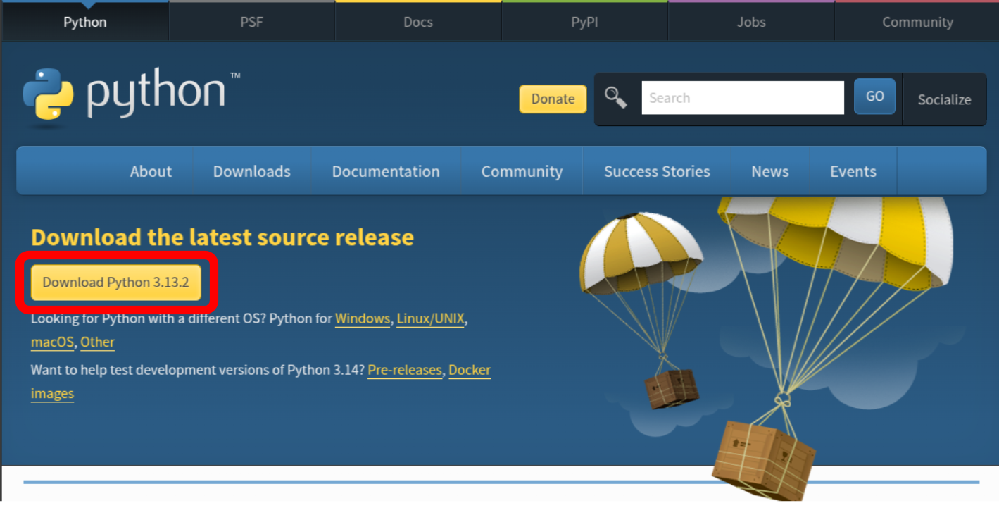
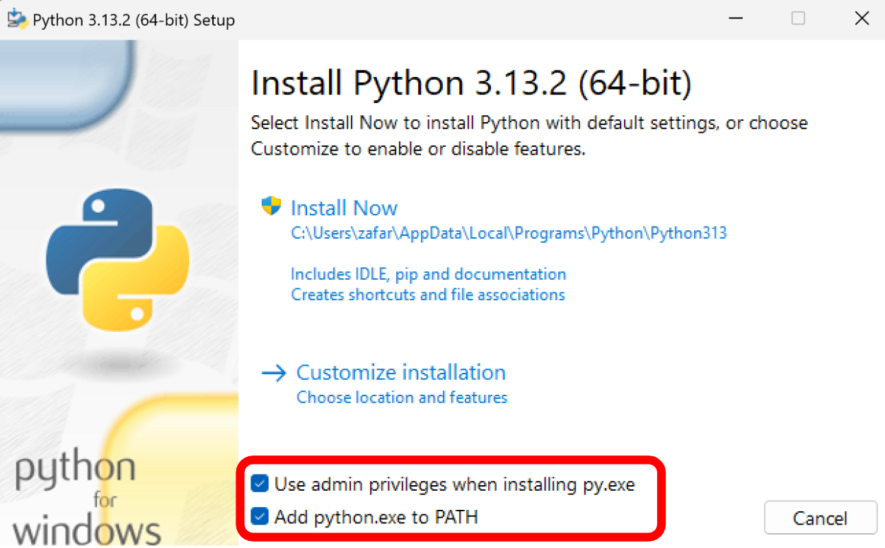
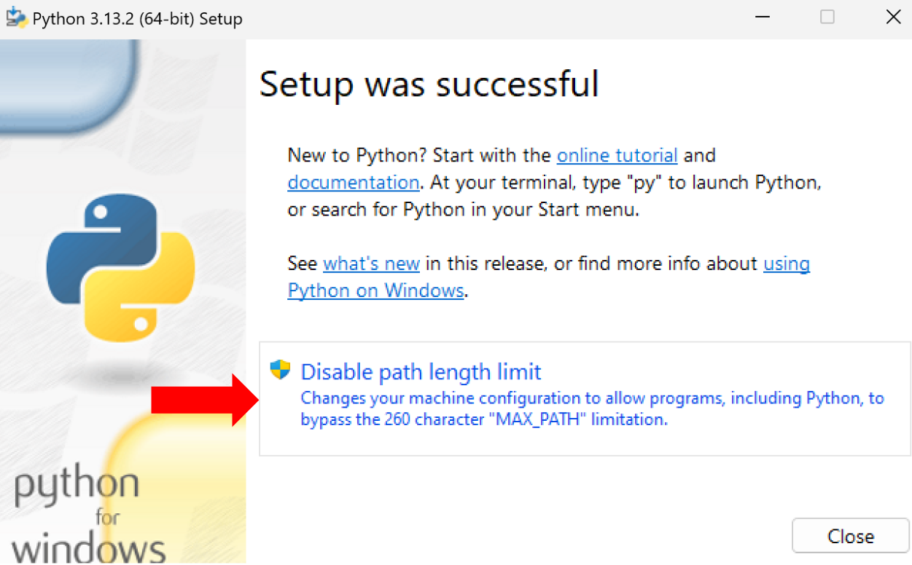

Installation
NeuroFlow
A Python 3+ installation is required to run NeuroFlow. See Python installation instructions below if you do not have it installed on your current system.
It is recommended to install NeuroFlow in a virtual environment in order to avoid package and versioning conflicts across Python libraries. See Using virtual environments for more information.
To install NeuroFlow:
- Open a terminal and run the installation command:
pip install git+https://github.com/neurocog-mobility/neuroflow.git
- Test the installation and view all available commands:
neuroflow --help
Upgrading NeuroFlow
Once installed, to upgrade to a newer release add the --upgrade flag:
pip install --upgrade git+https://github.com/neurocog-mobility/neuroflow.git
Python
Important
Installing multiple versions of Python on a system can raise several errors. If you already have Python 3+ installed, skip this section. To check what version of Python you have installed before proceeding, have a look at Checking Python version.
Downloading Python
Start by downloading the official installer for your system:
- Navigate to the official Python release page: |python_link|.
2.
Click the Download Python link.

Installing Python
Navigate to the downloaded Python installer and run it:
- Ensure both the
Use admin privilegesand theAdd python.exe to PATHcheckboxes are selected.
2.
Click Install Now.

3.
After the installation completes, click Disable path length limit before closing the installer.
